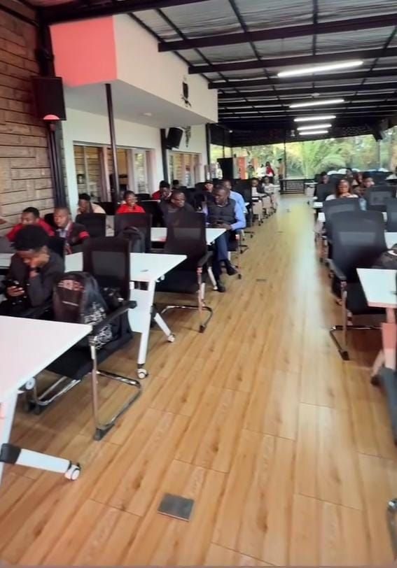
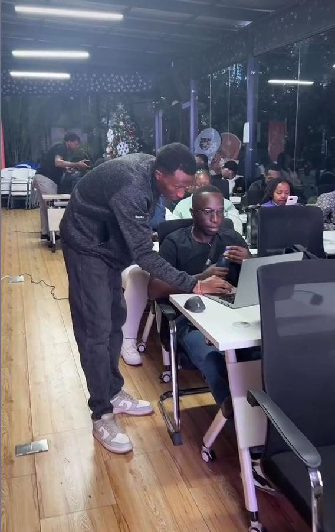
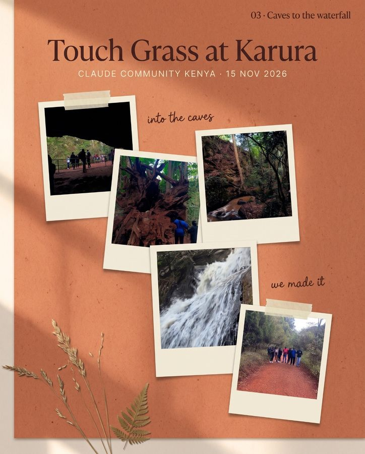
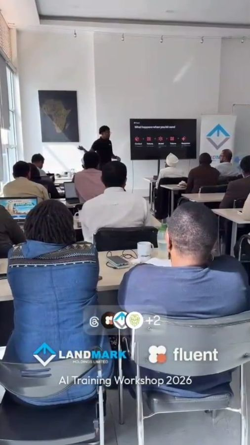
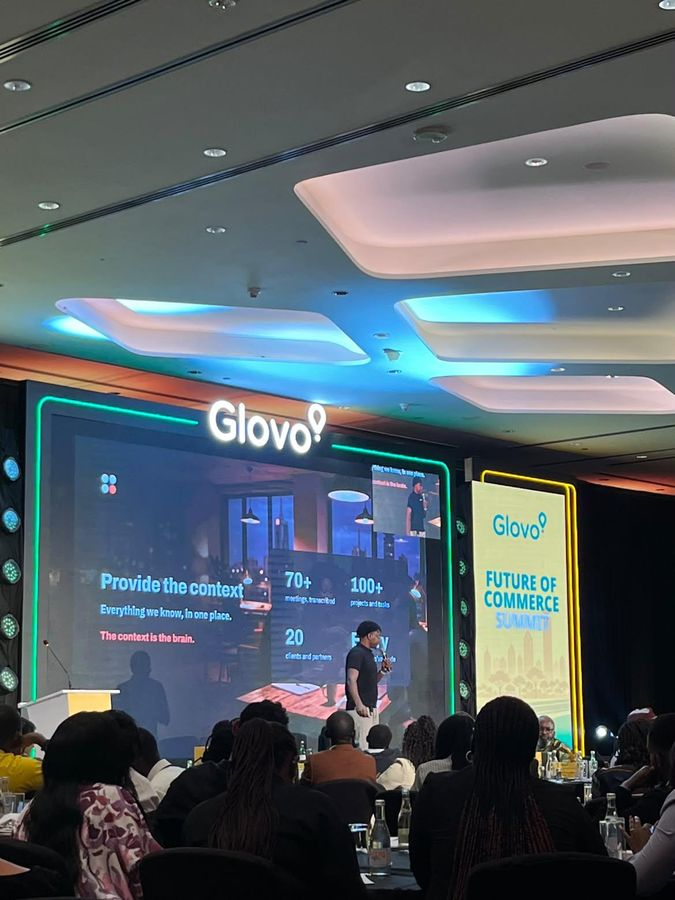
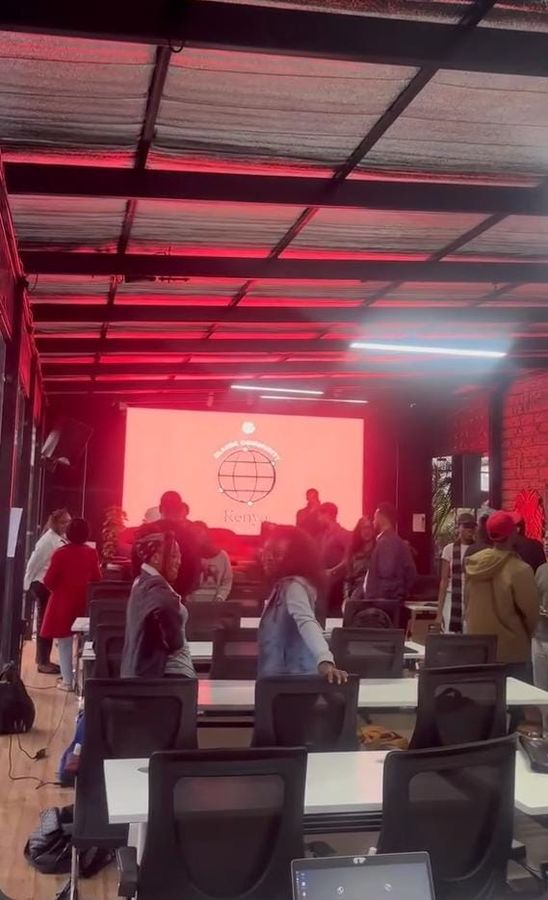
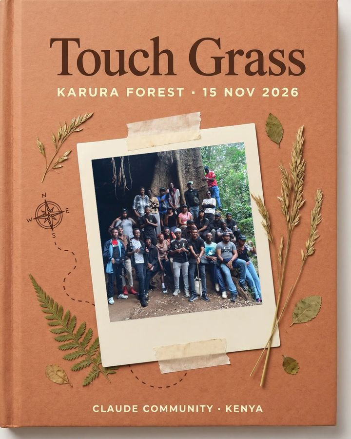

My name is Dawn Wanjiku. I have been at Hackhouse for about two and a half to three months now. What I have learned since I came has been very broad, and it has expanded how I think about things. What I have been trained in is AI.
I work with Fluent at Hackhouse, alongside Claude Community Kenya. Billy, Peter and Sam have taught me a lot.
What I learned
What an AI agent isA model that has been given a set of instructions and tools to carry them out.
Progressive disclosureKnowing only what is necessary, when it is needed.
PromptsWhat a prompt is.
SkillsWhat skills are.
Using ClaudeHow to use Claude and its features.
Using AI safelyHow to use AI safely in my work.
The right contextGiving it the right context so it gives the right output.
I have attended events that helped me see what is behind the future, and how I can use AI safely in my work. I have also really enjoyed my time with Sam, Peter and Billy. Beyond being co-workers, they have been really good friends to me. Thank you for everything you have included me in, done for me and taught me. It means a lot.
I am a student at Daystar University pursuing a Diploma in ICT, and I am currently doing my attachment at Hackhouse Africa, a company that is more of a community. When I first joined, I thought it would be something ordinary: go in, do some work, watch TikTok, run a few errands, and let three months fly by, the way people describe attachment.
Little did I know it would be one of the best decisions I ever made.

A community session
Meeting the people
I am based at Fluent, alongside Claude Community Kenya. Sam was the first person I met there. He asked if I knew what they were doing, and honestly, I had never researched it until then. It did not sound like something big until I realised how amazing it could be. I came back the next day and met Billy, then Peter.
I have never met people so eager to teach me until I understand, to include me in their activities so my scope grows, and to make me feel loved like the second family I never had. They accept me and introduce me to places I never thought I would reach.

Learning side by side
Someone asked me if I knew what a privilege and an opportunity it is to be part of these people.

Into the caves, and we made it
Learning at my own pace
I was scared of making others uncomfortable, and of growing into this place or forgetting myself along the way. Instead, it has made me a better person. I thought about that question day after day, night after night, and I came to see how blessed I am to be here.
I take time to process things. When Billy asked me questions about AI, Sam asked, "Do you want to do this, do you want to know this?" I said yes, I was just thinking and processing. It felt like a lot the first time, and confusing, because I felt I was supposed to already know everything. But everything takes time.
What I enjoy most is meeting people at the Claude community events, learning what they do, and finding how we can network and help each other.

AI Training Workshop 2026

Future of Commerce Summit
Mistakes, doubts and growth
As my attachment comes to an end, I know I have made a lot of mistakes. Every time Sam warns me, I wonder whether I am good enough. Am I allowed to make mistakes? Am I trying too hard to be perfect? Am I the right person for this position? I have learned, and gone back to my notes, and still I do not always feel good enough.
I also do not know whether I will be retained at Fluent after this attachment, because of my mistakes, or because I may not be a huge help to them. All I can say is that I tried to become a better version of myself, and I am leaving with a different mindset from the one I came with.

Claude Community Kenya
A place that makes you want more
There is something about this place that makes you want to work harder and gives you a reason to succeed. Every day you see someone's dream car parked outside, or you see your own dream car and wonder how you will get there. People here are very young and already very successful.
I have made good friends here too. They may not know it, but I smile every day when I see them, because I never really had friends to share my smile with.

Touch Grass, Karura Forest
It is not just about writing the logbook and the supervisor coming. It is about acquiring the skills required, and gaining the experience for the sake of my future and for myself.
Touch Grass, Karura Forest · 15 Nov 2026AI Training Workshop 2026Future of Commerce SummitAbsa training with FluentClaude Community KenyaTouch Grass at Karura: into the caves, and we made itA community sessionLearning side by side
Thank you for this opportunity. I may not be the best candidate for this job, but I learned something. Tech is huge and I still have a long way to go. I am going to try what you taught me and apply it in my work.